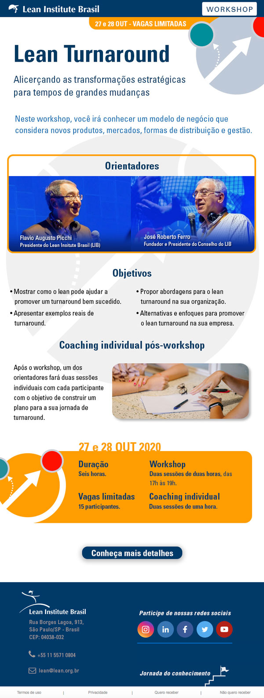
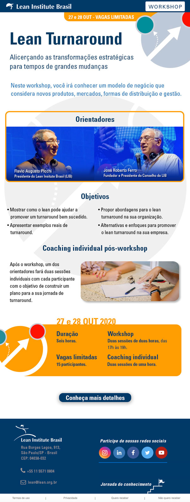

Landing page Lean Summit 2020
Actions: Création de l'identité visuelle de l'événement, développement de l'UI et de l'UX pour smartphone, et création de la Page d'atterrissage de l'événement.
Création de la page d'atterrissage de l'événement
projeto UI / UX
projeto UI / UX
J'ai conçu la page d'atterrissage pour le Lean Summit 2020 en utilisant le concept de la blockchain comme élément central de l'identité visuelle de l'événement. Cette approche m'a permis de créer une page extrêmement attrayante, mettant en valeur le Lean Summit par rapport à d'autres événements similaires. En utilisant ce concept, j'ai réussi à saisir l'essence de l'événement et à projeter de manière créative le concept de l'événement.


 
